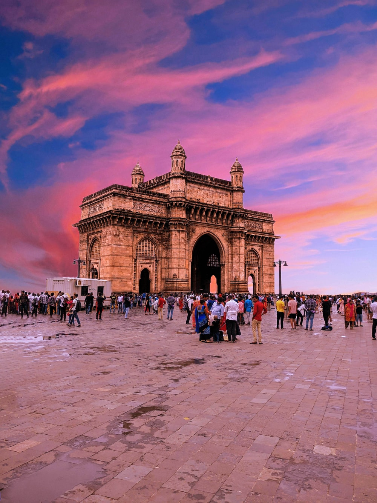

Maharashtra is a state in the western and central peninsular region of India occupying a
substantial portion of the Deccan Plateau. Maharashtra is the second-most populous state in India and
the second-most populous country subdivision globally. It was formed on 1 May 1960 by splitting the
bilingual Bombay State, which had existed since 1956, into majority Marathi-speaking Maharashtra and
Gujarati-speaking Gujarat as a result of nationwide organization of states on the basis of language.
Maharashtra is divided into 6 divisions and 36 districts, with the state capital being Mumbai,
the most populous urban area in India, and Nagpur serving as the winter capital,
also hosts the winter session of the state legislature.
Characteristic Features
| Capital |
Mumbai |
| Language |
Marathi |
| Mammal |
Indian giant squirrel |
| Bird |
Yellow-footed green pigeon |